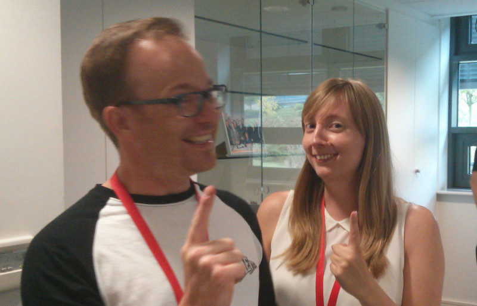

PyconUK 2014 Round Up
(This write-up is a bit late: I've been ill and we've recently had a death in the family.)
This year was the biggest ever PyCon UK conference - a community organised event for users of the Python programming language. Just under 500 tickets were booked including 45 for teachers and 75 for kids. We couldn't have done it without the support of the sponsors, especially Bank of America, the Python Software Foundation and Raspberry Pi Foundation without whom the education track would not have been possible.
For me, the person responsible for the education track, I had most fun working with the teachers and kids who turned up. I also seemed to be giving far too many presentations (four in total during PyCon UK). I also realised, due to circumstances beyond my control, that I have many kind and generous friends in the Python community and that when disaster strikes people step up and make "stuff" happen even at 4 o'clock in the morning!
It was a privilege to watch several masters at work during the education track:
The education team from the RaspberryPi Foundation are insane, inspiring and intelligent in equal measure - if you can attend one of their free Picademy events for teachers than you're in for a real treat. It's easy to sound bombastic about the work of the Raspberry Pi Foundation (so allow me to demonstrate): the pedagogical forces that they unleash are both unique (because who'd have thought such a small, cheap and "raw" piece of kit would result in such a huge amount of interest) and important (because the Raspberry Pi liberates computing education from the boring sad little world of locked down RM boxes, presentations and spreadsheets). That they are a UK based effort makes it all the more important that we, the UK's Python community, give them as much of our support as possible.
It was also wonderful to see Martin O'Hanlon work his Minecraft magic on both teachers and students. Martin introduces Python programming via only a handful of very simple Minecraft related concepts that he uses to build some amazing things within the Minecraft world (his in-game house that follows you around was a big hit with the kids). He's so good at this sort of thing that he's written a book on this very subject (that's bound to be a big hit with young programmers and teachers alike - what an inspiring textbook that would be). In case you can't wait for its publication you can grab his PyCon UK resources here.
(Here's a photo of Martin and fellow author Carrie Anne looking like the cartoon versions of themselves used in their books.)

I was especially pleased to welcome John Pinkney and his NAO robots. I met John at a CAS hub meeting over the summer where he described how he uses robots as a catalyst for all sorts of interesting educational activities. The visual programming tool used to interact with the robots strikes me as particularly child-friendly. Interestingly the code behind the visual building blocks used to describe the robot's behaviour is all written in Python (and thus handily gave me an excuse to invite John to PyCon UK). John gave two workshops (one for teachers, the other for kids) and the fact that he managed to keep both groups in rapt awe for an hour is testament to both his skill as a teacher and the "charisma" of the robots. We also ran a robot code dojo at which we let the developers play with the bots. I gave a quick overview of the Python API to the assembled developers and my slides can be found here.
Dave Ames also deserves a special mention for leading a couple of excellent workshops on using the PyGame project. Dave's workshops involved taking an existing (yet broken / unfinished) game and modifying the code to fix things and make it your own. I really like this approach since it gives students an existing base to work from. It also makes sure that beginner coders begin the think about debugging their own and other people's code (for which we provided all attendees with a PyCon UK Debug Duck. This rather excellent state of affairs is wonderfully encapsulated in the following video from the kids' day:
Alan O'Donohoe, Ben Smith and Vikki Dodd are three teachers without which the education track would not function. Alan's pragmatic encouragement when disaster struck (twice) was invaluable and Ben and Vikki made innumerable contributions throughout the event that meant I was regularly thinking, "Oh wow, [Ben/Vikki] has already done that." That's what I mean when I say that people "step up".
It was an immense privilege and a lot of fun to work with Naomi Ceder (founder of the PyCon US Education Summit) on our own small contribution to the education track: introducing object oriented programming to teachers through the medium of cows. I especially enjoyed the tag wrestling modus operandi of our talk. I'll leave you to guess which one of us was Big Daddy or Giant Haystacks (a UK specific cultural reference I'm sure Naomi will be delighted to quickly forget). In any case, both teachers and developers got stuck into our Parrot related exercise (as the picture below shows):

Finally, Carrie Anne gave a stonking keynote address to the whole conference on Sunday afternoon. I've heard far too many boring-yet-worthy-important-people-talking-about-boring-yet-worthy-important-things as conference keynotes in my time. Happily it soon became apparent that Carrie Anne's keynote was definitely not a boring-yet-worthy talk about matters of an educational nature. If you want to actually know what Carrie Anne said you should invite her to your conference to give the keynote. It would be definitely worth it: evidence via social networks suggests hers was the warmest received and most highly regarded keynote of this year's conference.
Other wonderful aspects of this year's PyCon UK included the beer for the conference meal (brewed using Python), the charity cheese shop that raised several hundred pounds for a local children's hospice and the inevitable silliness during the lightning talks.
Finally, it was a pleasure to catch up with Van Lindberg (chair of the Python Software Foundation). I'll leave what we discussed for a separate blog post but, in the meantime, you should all totally sign up to be members of the PSF here. Why? Because,
The mission of the Python Software Foundation is to promote, protect, and advance the Python programming language, and to support and facilitate the growth of a diverse and international community of Python programmers.
We've already started planning next year's conference. If you can think of any ways in which we can make it better please don't hesitate to get in touch.